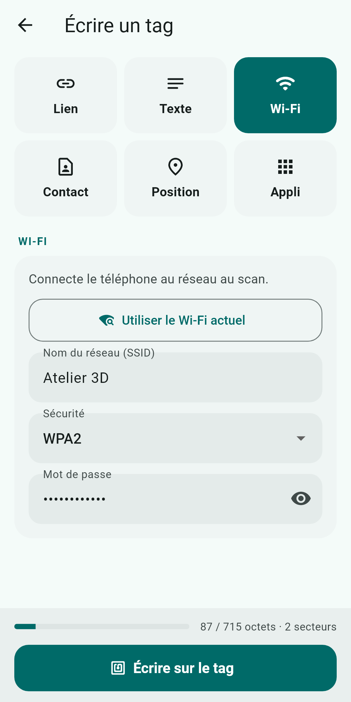
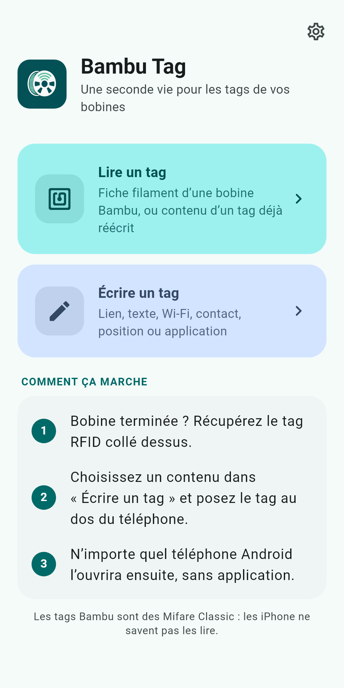
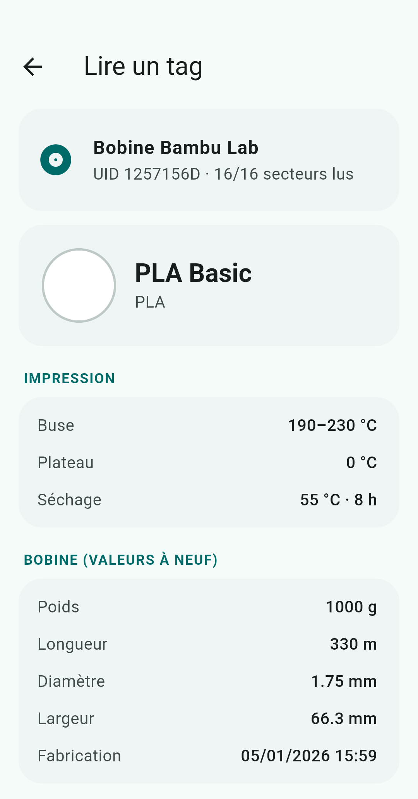
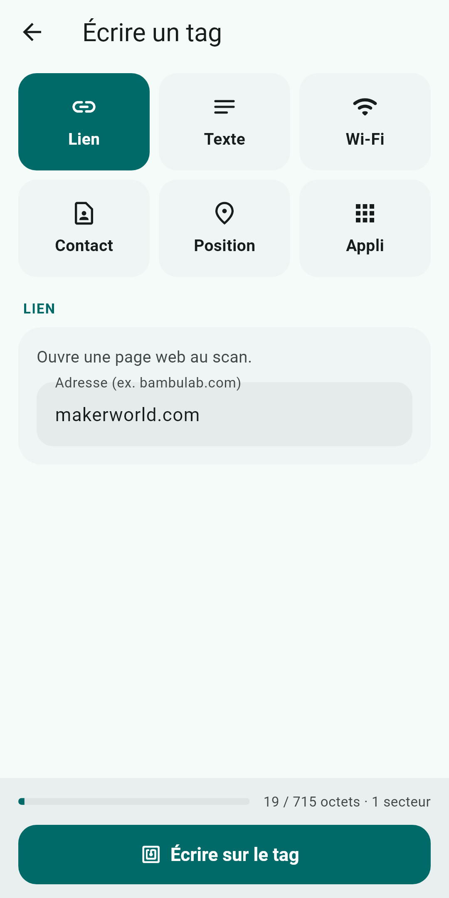
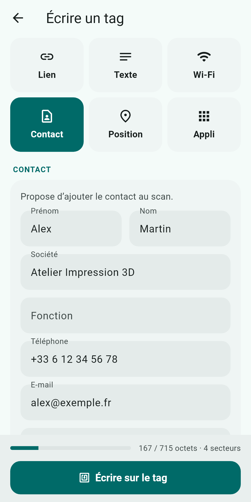
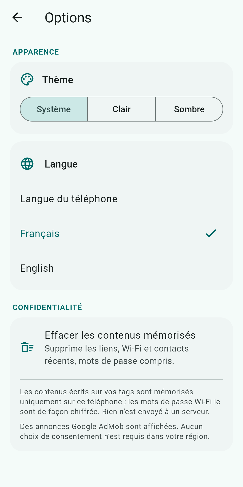

Bambu Tag lit le tag d'une bobine Bambu Lab, puis le transforme en tag NFC universel : lien, Wi-Fi, carte de visite, position GPS ou lancement d'application, lisibles par n'importe quel téléphone, sans application.
Télécharger sur Google Play
Deux gestes simples : lire un tag, ou écrire un contenu dessus. Tout se passe sur votre téléphone.
Approchez le tag : l'UID et les 16 secteurs s'affichent. Pour une bobine Bambu, la fiche filament est décodée : matériau, couleur, poids et longueur nominaux, températures, date de production.
Six types de contenus au format NDEF standard, lus ensuite par n'importe quel téléphone Android sans installer d'application.
Le contenu écrit est relu et comparé avant d'annoncer le succès. Un compteur indique la place utilisée (environ 700 octets au maximum) et une confirmation est demandée avant d'écrire.
Chaque contenu écrit avec succès est mémorisé sur le téléphone : rechargez-le en un geste ou supprimez-le, avec annulation. Les mots de passe Wi-Fi sont stockés chiffrés.
Un bouton reprend le nom du réseau auquel le téléphone est connecté. Le mot de passe, qu'Android ne donne pas, se saisit une fois puis se retrouve dans la mémoire.
Interface dans les deux langues, thème clair ou sombre, au choix dans les options ou selon le téléphone.
Ce que fait le téléphone de la personne qui scanne le tag.
| Type | Au scan |
|---|---|
| URL | ouvre la page |
| Texte | affiche le texte |
| Wi-Fi | propose de se connecter au réseau |
| Carte de visite (vCard) | propose « Ajouter aux contacts » |
| Position GPS | ouvre l'appli de cartes à cet endroit (coordonnées copiées depuis Maps, ou position actuelle) |
| Application | lance l'appli choisie, ou ouvre sa page Play Store si elle n'est pas installée |





De la bobine vide au tag réutilisé, en trois étapes.
Sur une bobine terminée, détachez le tag RFID collé dessus.
Dans « Écrire un tag », choisissez le type et remplissez les champs. Le compteur vérifie que cela tient.
Posez-le au dos du téléphone. Le contenu est écrit puis relu.
Aucun compte, aucun serveur : vos contenus restent sur le téléphone. La localisation n'est demandée que sur action de votre part. Des publicités Google AdMob sont affichées, avec formulaire de consentement dans l'EEE, le Royaume-Uni et la Suisse.
Lire la politique de confidentialitéNon. L'écriture remplace les clés du tag : l'imprimante ne le reconnaît plus. N'écrivez que sur des tags de bobines vides.
Uniquement pour « Wi-Fi actuel » (Android exige cette autorisation pour lire le nom du réseau) et pour « Position actuelle ». Rien n'est envoyé nulle part.
Oui : le contenu d'un tag NFC se lit sans protection. Écrivez un mot de passe Wi-Fi seulement sur un tag que vous gardez chez vous, par exemple pour des invités.
Il faut une puce NFC NXP. Sur d'autres puces, l'accès bas niveau au Mifare Classic peut manquer. Vérifiez aussi que le tag est bien un Mifare Classic 1K.
Oui, avec des publicités Google AdMob. L'application reste entièrement utilisable si vous refusez les annonces personnalisées.